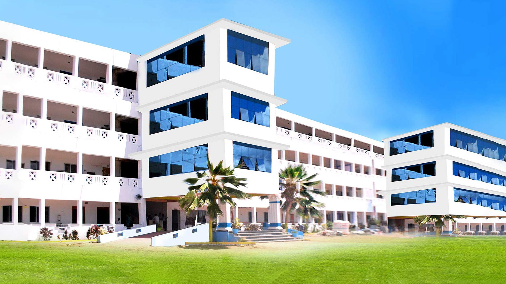
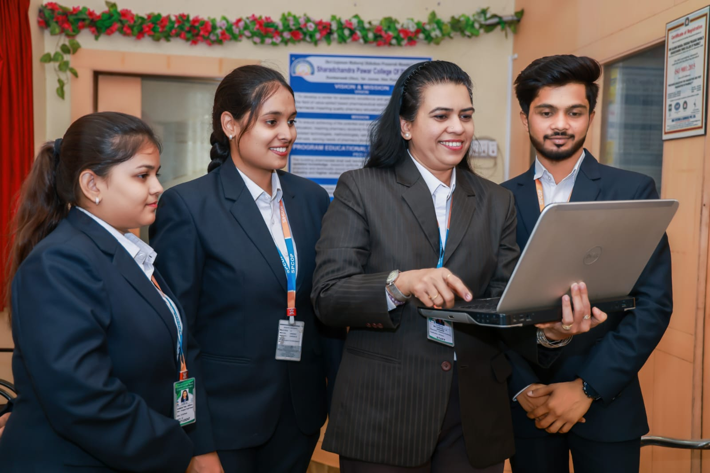
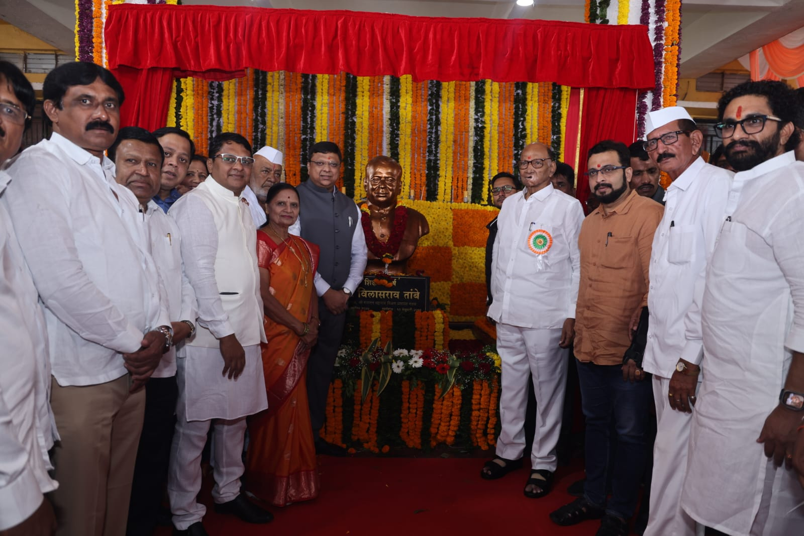

About Us
Sharadchandra Pawar College of Pharmacy is dedicated to providing quality education in pharmacy and healthcare. Our state-of-the-art facilities and experienced faculty ensure students receive the best training to excel in their careers.
Who We Are
Shri gajanan maharaj shikshan prasarak mandal is a dream come true of its founder late Mr. Vilas Tambe an Educationalist and above all a great visionary, who nearly single handedly laid the foundations of this Educational Society. Was started in early 1990 as a small school, blossomed into a set of Educational Institute for quality education, ranging from the pre-primary to Post-Graduate colleges. Today our institution is one of the Premier Educational Society in Pune District. The Society is functioning with its vision for social transformation & upliftment of rural masses through education, training and research. Further to keep up its education, training and research. Further to keep up its commitment to the society, it provides scholarships to deserving students so that they can translate their dreams into reality. We at Gajanan maharaj shikshan prasarak mandal, are working with a team spirit, dedication, sincerity and enthusiasm to build ourselves and the society as a whole with the help of our team of highly qualified faculty. We believe in giving beyond what is necessary, excelling beyond the defined norms and achieving success beyond all expectations. Students here are provided education to contribute to the needs of a changing society
 Courses Offered
- Bachelor of Pharmacy (B.Pharm):-Admission to First Year B. Pharm. And Direct Second Year B. Pharmacy is done through Centralized Admission Process (CAP).
- Diploma in Pharmacy (D.Pharm):-Admission to First Year D. Pharm. is done through Centralized Admission Process (CAP)
- Bachelor of Ayurvedic Medicine and Surgery (BAMS)
- Masters in Pharmacy(M.Pharm):-Admission to First Year M. Pharm. Pharmaceutics, Pharmaceutical Quality Assurance and Pharmacongosy is done through Centralized Admission Process (CAP).
- Ph.D.:-Ph.D. Admission to Ph.D. Pharmaceutical Sciences is done through the regulations prescribed by the Savitribai Phule Pune University, Pune.
Why Choose SPCOP College?
1.Scholarship Facility:-SPCOP offers all types of Scholarship as per the rules and regulations of State Government.
2.Value Added Course:-SPCOP offers the value added certificate courses to B. Pharmacy students
3.Approvals:-SPCOP has NAAC B+ ACCREDITATION, PCI & AICTE APPROVED COLLEGE
Our Faculty
Dr. Mali Anil S.
M. Pharm. Ph.D.
Associate Professor
Mrs. Gaikwad Asmita V.
M. Pharmacy
Asst. Professor
Mrs. Chiwadshetti Nirmala S.
M. Pharmacy
Asst. Professor
Mr. Pulate Chetan P.
M. Pharmacy
Asst. Professor
Contact Us
Email: info@cssmcollege.com
Phone: +91-9876543210
Address: Otur. Nagar-Kalyan Highway, Junnar ,Pune